Você já ouviu falar em biotecnologia forense? Esta tecnologia usa um enorme número de técnicas que envolvem conhecimentos tais como química e biologia, com o objetivo de auxiliar solucionar problemas de ordem juridica, como por exemplo, quem são os pais de determinada criança ou quem cometeu um crime!!
